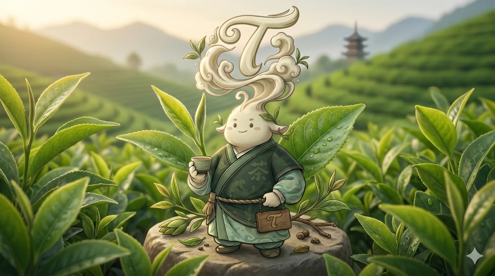
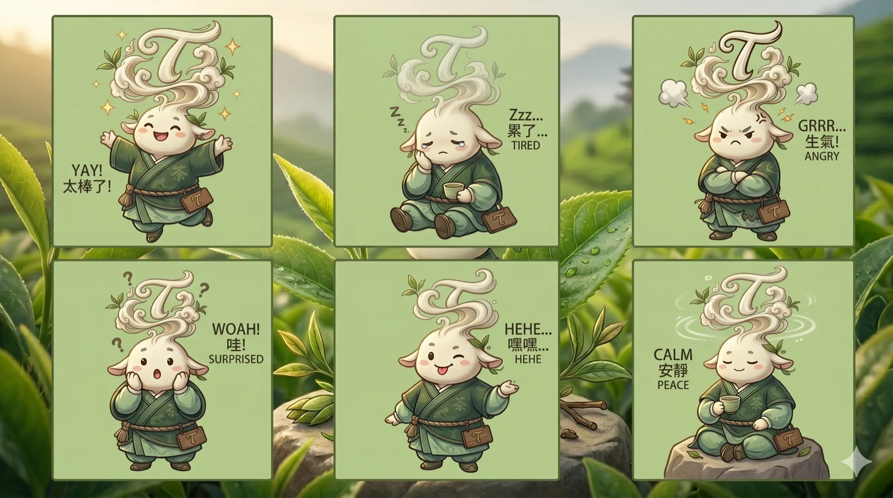
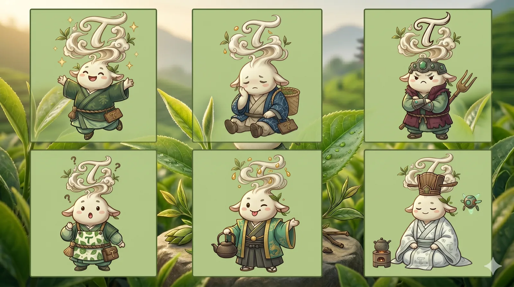
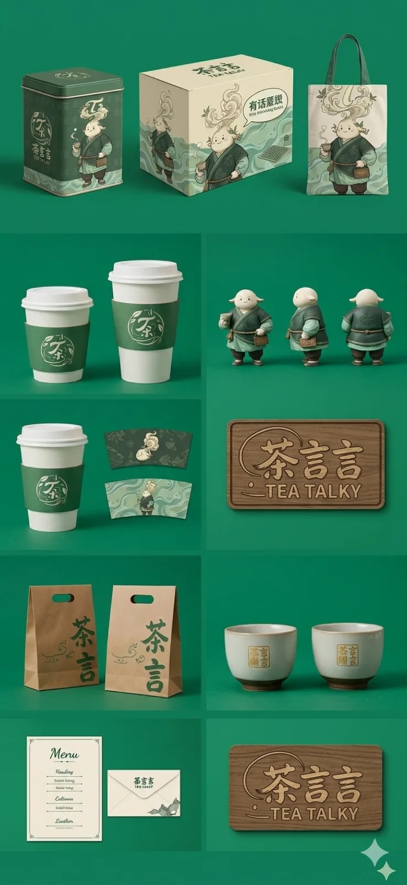
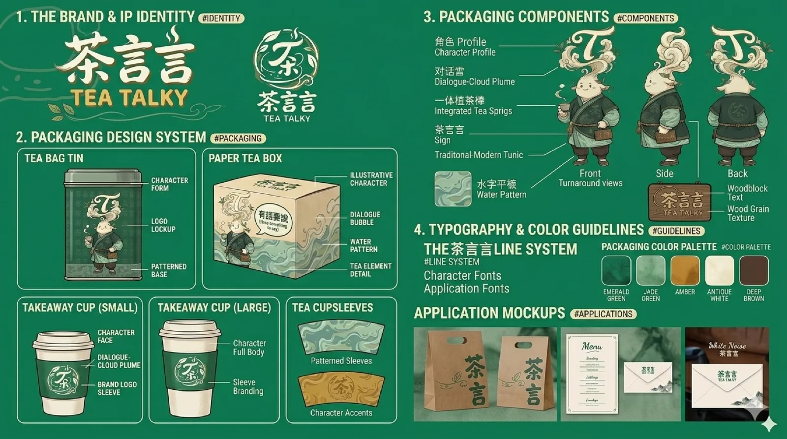

Character / PROJECT 19
茶言言
茶言言 · Tea Persona
"万物皆可茶，凡事皆可言"——茶言言是一个拟人化的茶业 IP 角色。
- ROLE
- 角色设定与视觉延展
- TIME
- 项目年份待确认
- TOOLS
- 设计工具清单未提供
- TYPE
- Visual design study
- STATUS
- Independent visual study

01 / ONE-LINE CONCEPT
One-line concept
"万物皆可茶，凡事皆可言"——茶言言是一个拟人化的茶业 IP 角色。
02 / VISUAL SYSTEM
Visual system
- 信条 (#Belief)：万物皆可茶，凡事皆可言
- 性格 (#Personality)：INFJ · 安静 · 倾听者 · 递茶人
- 特质：深谙茶道 · 懂山川自然秘密 · 被茶香陶醉会发呆
- 延展：色彩体系 (Color Palette) · 表情动作 · 换装 · 杯套
03 / KEY EXPLORATION
Key exploration


05 / FINAL OUTPUT
Final output
"万物皆可茶，凡事皆可言"——茶言言是一个拟人化的茶业 IP 角色。他安静，是那种会静静听你说话、为你递上一杯热茶的陪伴者。他深谙茶道，懂很多山川自然的秘密，但偶尔会因为被茶香陶醉而发呆。
More exploration / 2 more images


CONTINUE EXPLORING